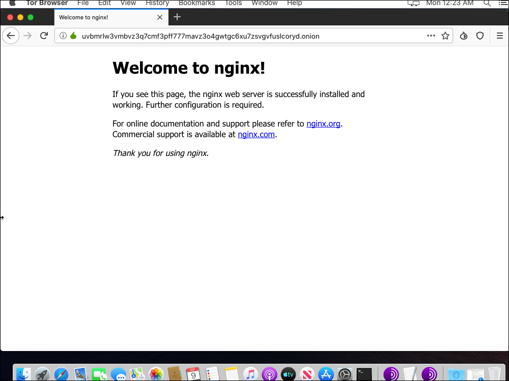

September 9, 2019
This post demonstrates how to create a Tor hidden onion service using the Nginx web server. This tutorial is for a server running Debian 10, also known as Debian Buster.
All commands are issued as root.

Update system:
apt update
apt upgrade
Install, enable, and start nftables:
apt install nftables
systemctl enable nftables
systemctl start nftables
Add a rule to accept all related and established traffic:
nft add rule inet filter input ct state related,established counter accept
Add a rule to accept loopback interface traffic:
nft add rule inet filter input iif lo counter accept
Open access to port 22, which is the SSH port:
nft add rule inet filter input tcp dport 22 counter accept
Drop all other traffic:
nft add rule inet filter input counter drop
Note that we do not need to open port 80, the HTTP port. This is because of the way onion services communicate with clients via rendezvous points.
Persist the firewall across reboots:
nft list ruleset > /etc/nftables.conf
Install the Nginx web server:
apt install nginx
This installs Nginx version 1.14.2.
Edit the main Nginx configuration file:
vi /etc/nginx/nginx.conf
In the main http block, uncomment the line that prevents display of revealing information:
server_tokens off;
Add a line to prevent someone presenting your site's content in a frame on some other site:
add_header X-Frame-Options "SAMEORIGIN";
Add a line to reduce the possibility of cross-site scripting:
add_header X-XSS-Protection "1; mode=block";
Add lines to limit buffer sizes, thus reducing the potential for buffer overflow attacks:
client_body_buffer_size 1k;
client_header_buffer_size 1k;
client_max_body_size 1k;
large_client_header_buffers 2 1k;
Write the Nginx configuration file to disk, and quit the editor.
Edit the default host configuration file:
vi /etc/nginx/sites-available/default
Comment out the lines that make Nginx listen on TCP port 80, and add a line that makes Nginx listen on a Unix socket:
server {
#listen 80 default_server;
#listen [::]:80 default_server;
listen unix:/var/run/nginx.sock;
Still within the server block, restrict unnecessary HTTP request types by adding the lines:
if ($request_method !~ ^(GET|HEAD|POST)$ )
{
return 405;
}
Write the default host configuration file to disk, and quit the editor.
Edit the system service file:
vi /lib/systemd/system/nginx.service
In the [Service] block, add a line to contain Nginx within its own private network, with only a loopback interface:
PrivateNetwork=yes
Write the Nginx service file to disk, and quit the editor.
Restart the web server with the new configuration:
systemctl daemon-reload
systemctl restart nginx
systemctl status nginx
Now we install Tor and create the hidden service.
Install the prerequisite package:
apt install apt-transport-https
Add the Tor repositories to your Advanced Packaging Tool (APT) sources list:
vi /etc/apt/sources.list
Add lines at the bottom for the Tor project repositories:
deb https://deb.torproject.org/torproject.org buster main
deb-src https://deb.torproject.org/torproject.org buster main
Write the file to disk, and quit the editor.
Add the GNU Privacy Guard (GPG) key used to sign the Tor packages:
apt install gpg
apt install curl
curl https://deb.torproject.org/torproject.org/A3C4F0F979CAA22CDBA8F512EE8CBC9E886DDD89.asc | gpg --import
gpg --export A3C4F0F979CAA22CDBA8F512EE8CBC9E886DDD89 | apt-key add -
Update your package lists:
apt update
Install Tor from the Tor project repository:
apt install tor deb.torproject.org-keyring
Edit the main Tor configuration file:
vi /etc/tor/torrc
Completely replace its original contents with the following:
Log notice file /var/log/tor/log
RunAsDaemon 1
DataDirectory /var/lib/tor
HiddenServiceDir /var/lib/tor/hiddenservicename/
HiddenServicePort 80 unix:/var/run/nginx.sock
Instead of literally putting hiddenservicename in the above, you should put a meaningful name of your own choosing.
Write the file to disk, and quit the editor.
Restart Tor for this change:
systemctl restart tor
Check that Tor is up and running:
tail /var/log/tor/log
You should see a message:
Bootstrapped 100% (done): Done
To determine your onion URL, issue the command:
cat /var/lib/tor/hiddenservicename/hostname
Instead of literally putting hiddenservicename, you should put the name you previously chose in the above.
You will get a response containing a domain name of 56 characters, suffixed by .onion. It will look like this:
uvbmrlw3vmbvz3q7cmf3pff777mavz3o4gwtgc6xu7zsvgvfuslcoryd.onion
You should also save the keys somewhere safe, where only you have access to them. The file names are hs_ed25519_public_key and hs_ed25519_secret_key.
Change the server name by editing the default site configuration file:
vi /etc/nginx/sites-available/default
Amend the server_name _; line to read:
server_name uvbmrlw3vmbvz3q7cmf3pff777mavz3o4gwtgc6xu7zsvgvfuslcoryd.onion;
Write the file to disk, and quit the editor.
Restart Nginx:
systemctl stop nginx
rm /var/run/nginx.sock
systemctl start nginx
You may have to wait ten minutes or so for your hidden service onion address to propagate.
Now, to test your work so far, download and install the Tor Browser from the Tor project site at https://www.torproject.org.
In your Tor Browser, visit your onion site. For example:
uvbmrlw3vmbvz3q7cmf3pff777mavz3o4gwtgc6xu7zsvgvfuslcoryd.onion
You should see the Welcome to Nginx! page.